Last Updated: 2021-06-28
このガイドでは、特定のメッセージプロセッサの実行前後をスパイしたり、特定のメッセージプロセッサが呼び出された回数を検証したりするための、MUnitの機能の概要を説明します。
Spyイベントプロセッサを活用したテストスイートを構築します。このテストスイートは、あるプロセッサでの変換前と変換後のペイロードをチェックし、検証します。
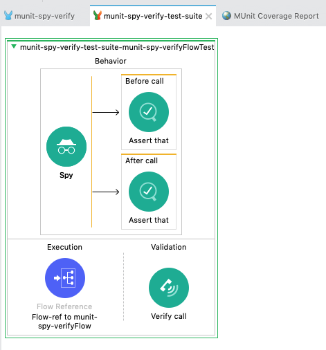
まだAnypoint Studioを開いていない場合は、Anypoint Studioを開きます。ワークスペースは何でも構いません。
FileメニューからNew > Mule Projectを選択します。
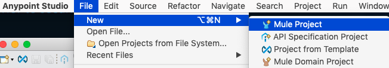
New Mule Projectウィンドウで、プロジェクトに名前を付け（例：munit-run-custom）、Runtimeを選択し（例：Mule Server 4.3.0 EE）、Finishをクリックします。
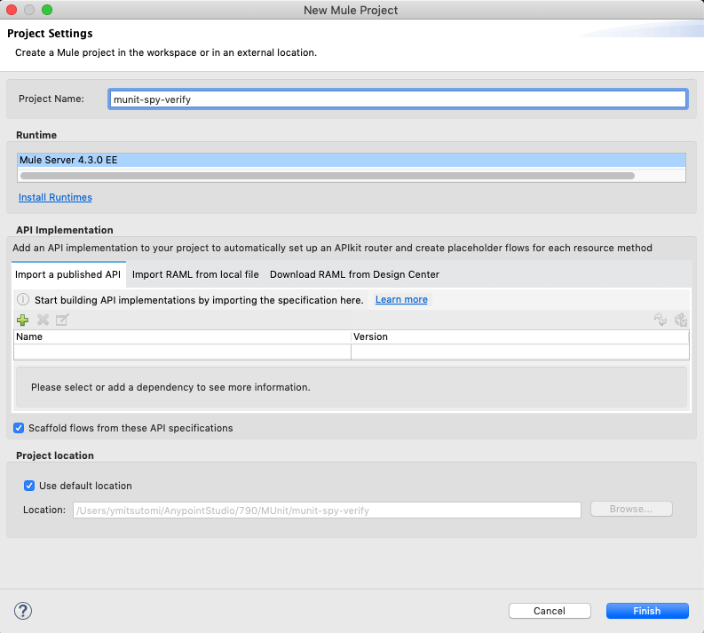
新しいプロジェクトが作成されると、真っ白なキャンバスが表示されます。
右側のMule Paletteから、HTTP > Listenerコンポーネントをキャンバスにドラッグ＆ドロップします。
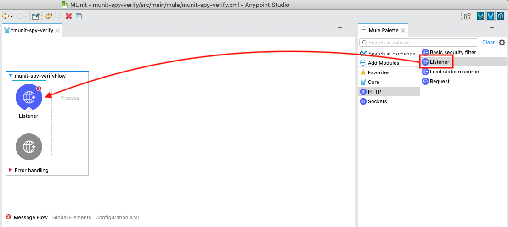
ListenerのMule Propertiesで、緑のプラス記号をクリックして、Connector configurationを作成します。
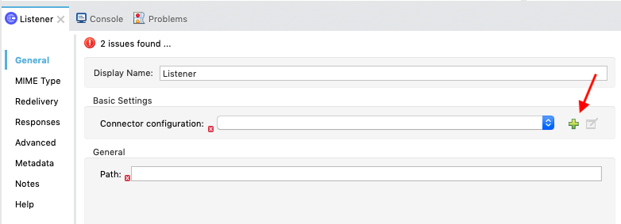
GeneralタブのConnectionセクションでは、デフォルトの選択のままOKをクリックします。
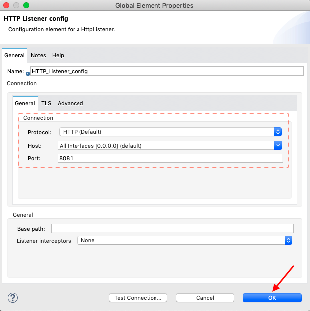
Muleのプロパティタブに戻り、Listenerの Pathフィールドに以下のように記入します。
/spy
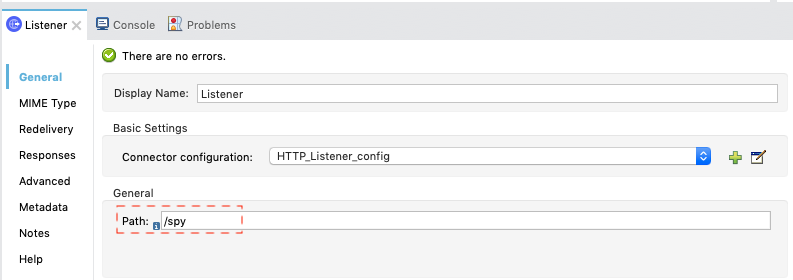
右側のMule Paletteから、Core > Transform Messageコンポーネントを、前のステップで作成したフローにドラッグ＆ドロップします。
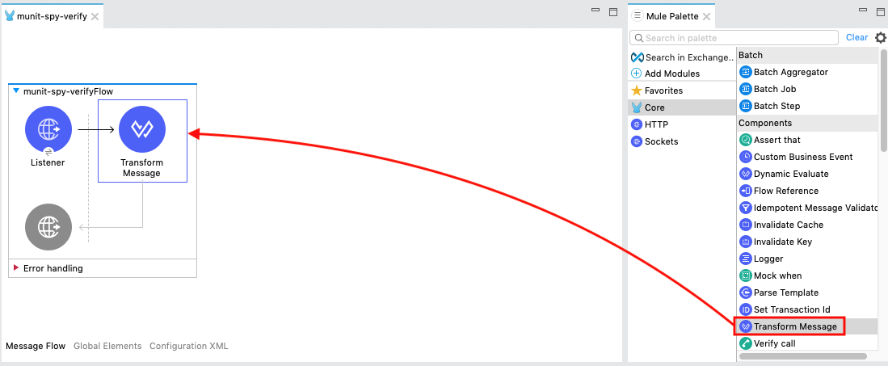
Transform Messageコンポーネントをクリックし、以下のDataWeave Scriptをコピー＆ペーストします。
%dw 2.0
output application/json
---
['111','222','333']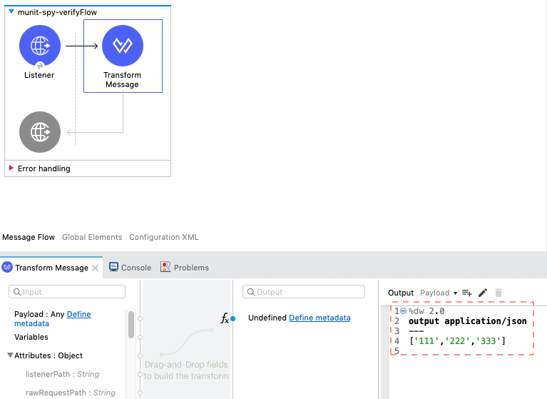
右側のMule Paletteから、Core > Loggerコンポーネントを、前のステップで作成したフローにドラッグ＆ドロップします。
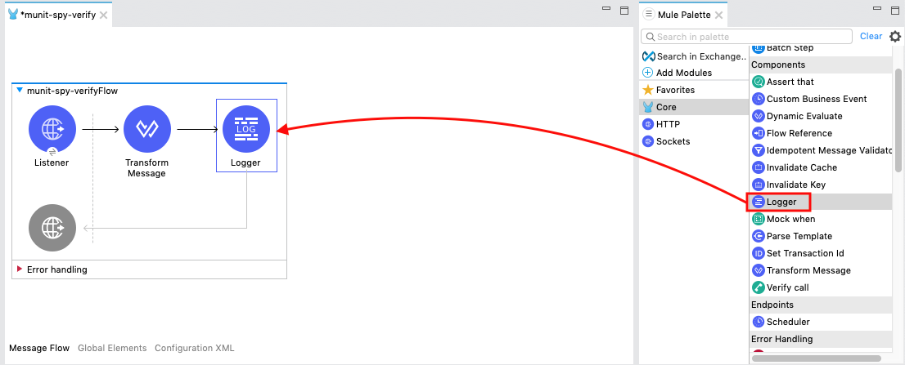
Messageフィールドのfxボタンをクリックして、Expression Modeにします。
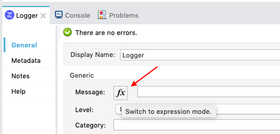
Messageフィールドを以下のように設定します。
payload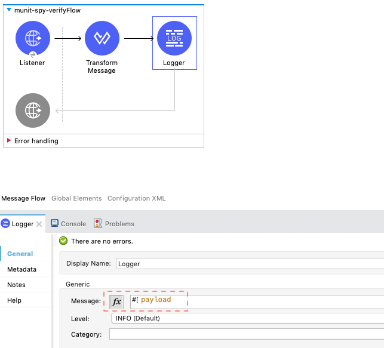
次のステップは、構築したフローをテストすることです。キャンバス上で右クリックし、Run project munit-run-customを選択します。
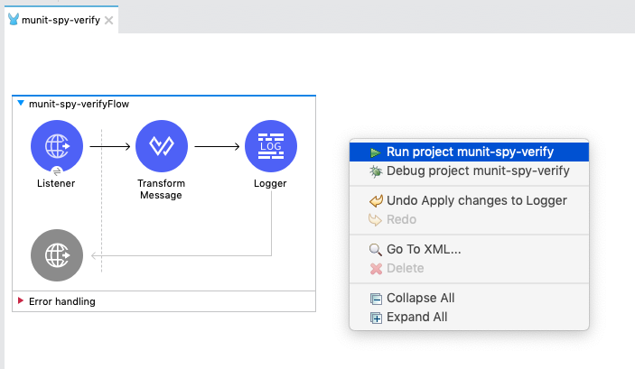
Consoleが表示されるはずです。ステータスがDEPLOYEDと表示されるのを待って、次のステップに進みます。
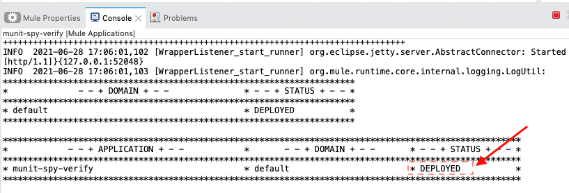
ブラウザを開き、URLバーにhttp://localhost:8081/customと入力します。
すべてが正しく設定されていれば、下のような画面が表示されます。
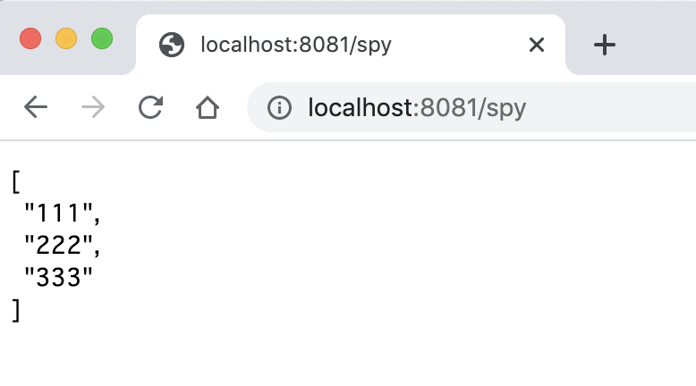
停止アイコンをクリックして、アプリケーションを停止します。
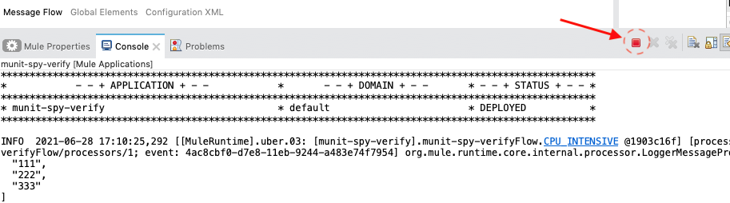
スタジオに戻って、Munit テストスイートを作成しましょう。
フローを選択して右クリックします。MUnit > Create blank test for this flow を選択します。
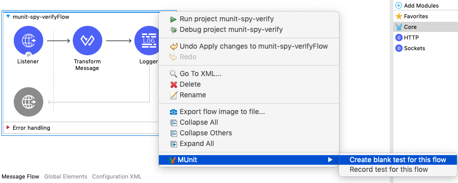
空白の MUnit Test Scope が作成されます。実行時には、MuleアプリケーションのフローへのFlow Referenceが表示されます。
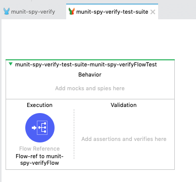
スパイプロセッサは、イベントプロセッサが呼び出される前と後に起こることをスパイすることができます。ここでは、トランスフォームプロセッサが期待通りにデータを変換することをテストするために、プロセッサを追加します。
Mule Palette から MUnit Tools > Spy を Test scope の Behavior セクションにドラッグ＆ドロップします。
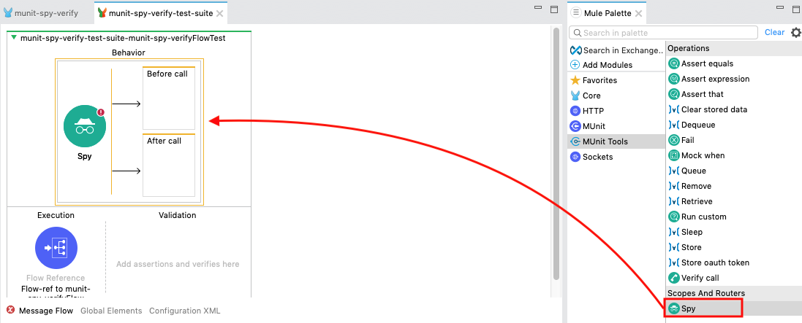
Mule Properties」タブで、Pick processorボタンをクリックします。
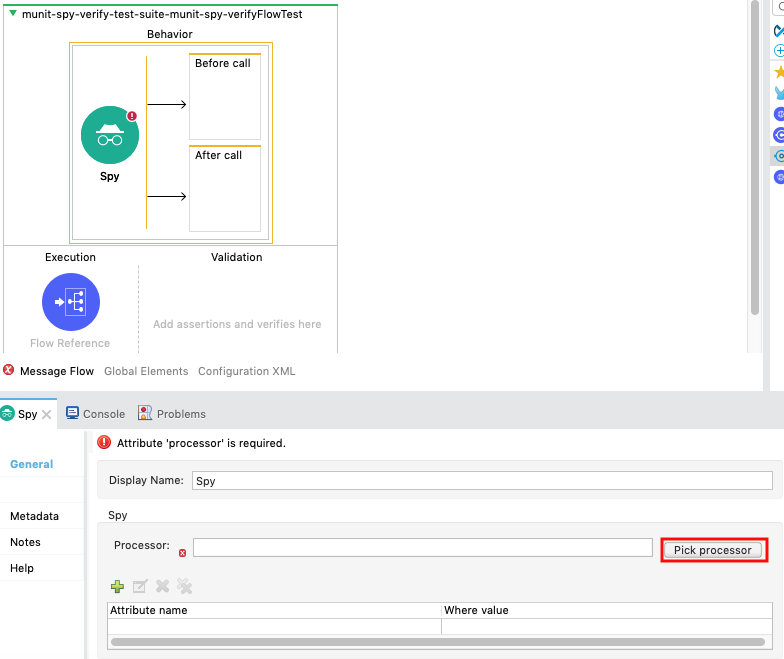
Transform Messageをダブルクリックします。次に、Attributes for Transform Message セクションの doc:id にチェックを入れます。有効になったらOKボタンをクリックしてください。
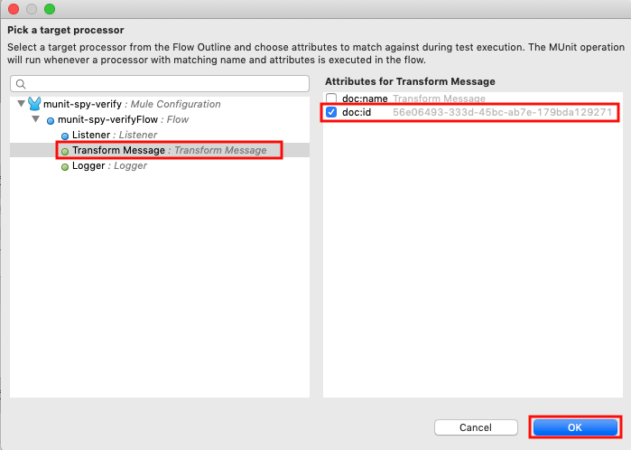
Muleパレットから、MUnit Tools > Assert thatをフロー内のSpyコンポーネントのBefore callとAfter callのボックスにそれぞれドラッグ＆ドロップします。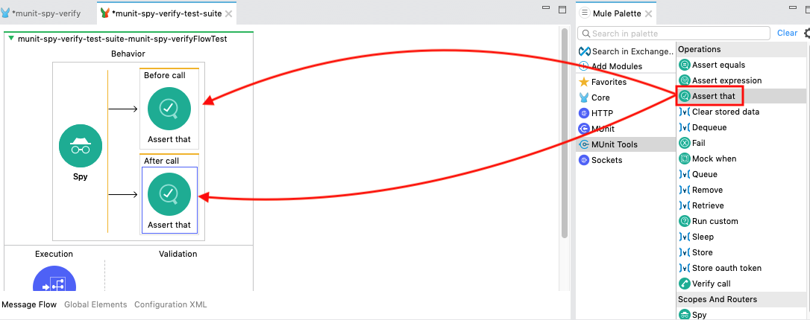
Before callのAssert thatでは、Expressionフィールドでfxボタンを押してExpressionモードにし、以下のように入力します。
payload
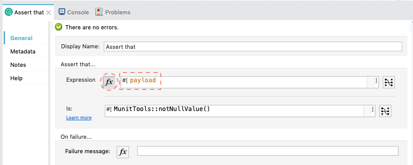
Isフィールドで、次の値を
MunitTools::notNullValue()
次に書き換え
MunitTools::nullValue()
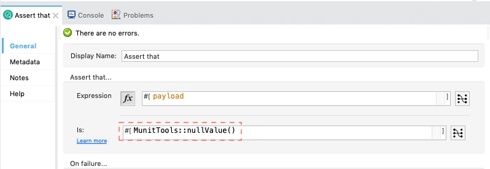
After callのAssert thatでは、Expressionフィールドでfxボタンを押してexpression modeにし、以下のように入力します。
payload
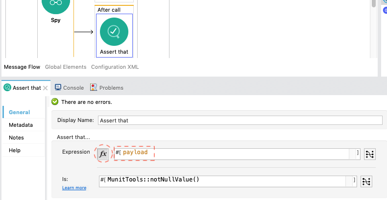
Isフィールドで、次の値を
MunitTools::notNullValue()
次に書き換え
MunitTools::withMediaType('application/json')
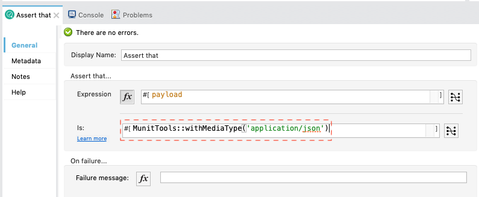
最後に、Verify callコンポーネントで呼び出しを検証します。
MUnit Tools > Verify call コンポーネント を Test スコープ の Validation セクションにドラッグします。
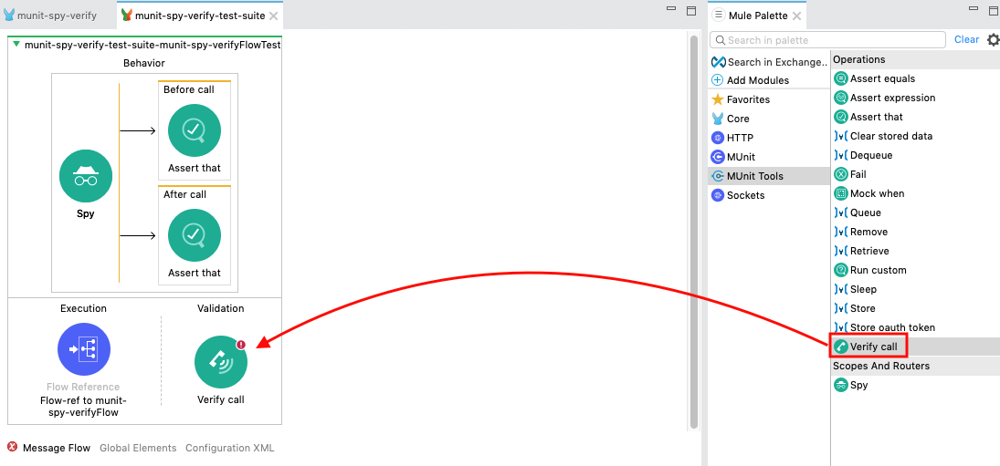
Mule Propertiesタブで、Pick processorボタンをクリックします。
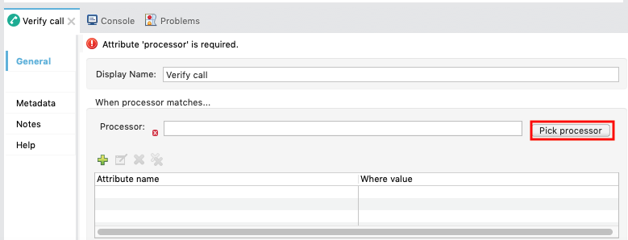
Transform Messageをダブルクリックします。次に、Attributes for Transform Message セクションの doc:id にチェックを入れます。有効になったらOKボタンをクリックしてください。
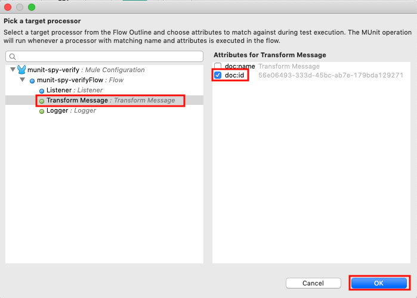
Validate that...セクションが表示されるまで下にスクロールします。
ComparisonフィールドでIs equal to...を選択します。そして、Valueの欄に「1」と入力します。
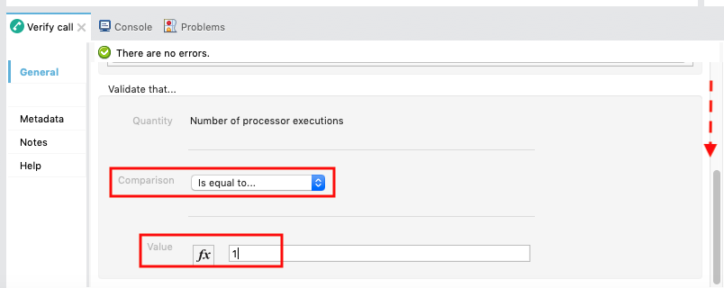
次のセクションでは、MUnit スイートを実行して、テストの結果を確認します。スタジオ・コンソールには、フローの出力が表示されます。さらに、MUnit 用のビューがあり、結果、エラー、メッセージ、カバレッジ・レポートが表示されます。
テストのセットアップが完了したので、テスト・スイートを実行して、合格するかどうかを確認してみましょう。
フローを右クリックし、Run MUnit suiteを選択します。
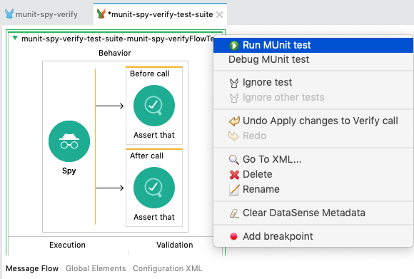
すべてが正しく設定されていれば、Consoleにテストが成功したことが表示されます。
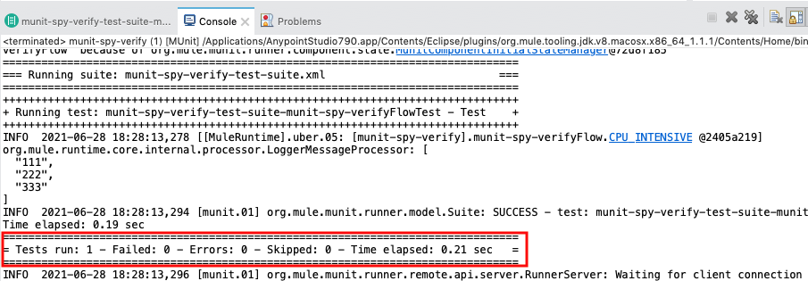
さらに、MUnitタブには、エラーや失敗がゼロで実行が成功したことが表示されます。
MUnit CoverageタブでGenerate Reportをクリックします。
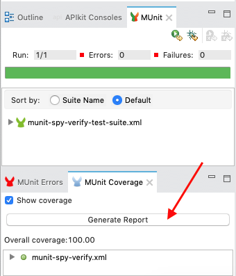
MUnit Coverage Report が生成され、テストの全体的なカバレッジの概要が表示されます。
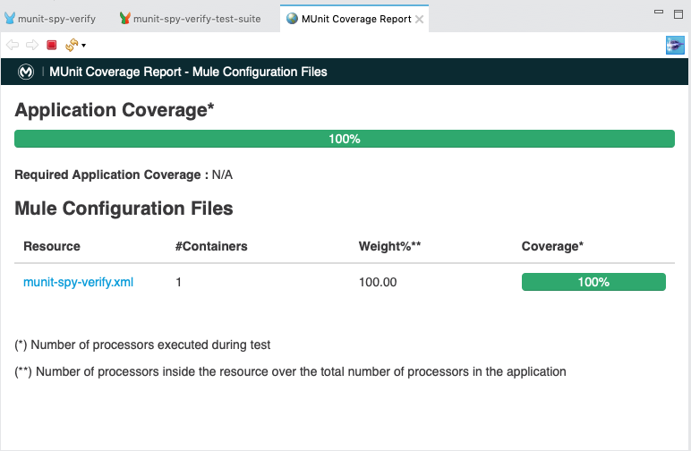
最後に、Muleのフローに戻ると、各プロセッサの横に緑色のチェックマークが表示され、MUnitテストがカバーしていた内容を示しています。
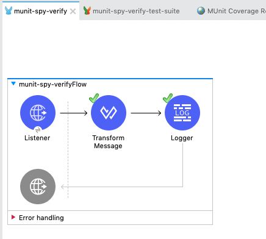
おめでとうございます。Spy event processorを使って、MUnitのテストケースを作成することができました。
Check out some of these codelabs...